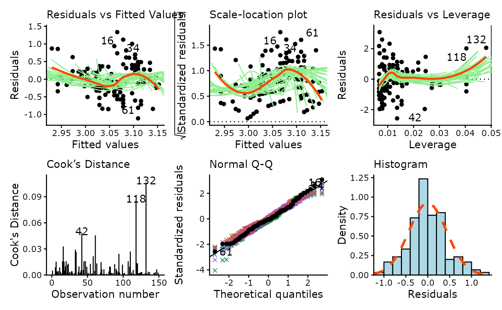
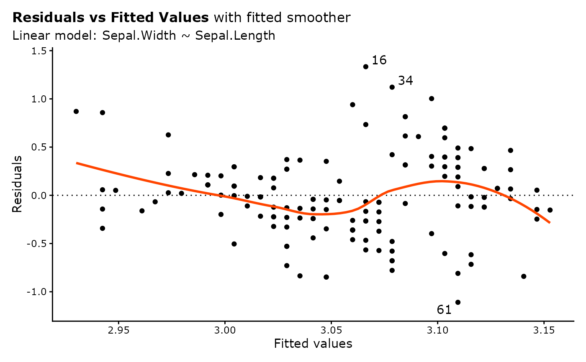

inzplot method
Diagnostic Plots for Regression Models
Usage
# S3 method for class 'glm'
inzplot(x, ..., env = parent.frame())
# S3 method for class 'lm'
inzplot(
x,
which = c("residual", "scale", "leverage", "cooks", "normal", "hist"),
show.bootstraps = nrow(x$model) < 1e+05,
label.id = 3L,
col.smooth = "orangered",
col.bs = "lightgreen",
cook.levels = c(0.5, 1),
col.cook = "pink",
...,
bs.fits = NULL,
env = parent.frame()
)Arguments
- x
a regression model
- ...
additional arguments
- env
the environment for evaluating things (e.g., bootstraps)
- which
the type of plot to draw
- show.bootstraps
logical, if
TRUEbootstrap smoothers will be shown (defaults toTRUEif fewer than 100,000 observations)- label.id
integer for the number of extreme points to label (with row id)
- col.smooth
the colour of smoothers
- col.bs
the colour of bootstrap (smoothers)
- cook.levels
levels of the Cook's distance at which to draw contours.
- col.cook
the colour of Cook's distance contours
- bs.fits
a list of bootstrapped datasets
Plot types
There are several plot types available:
residual versus fitted
scale-location
residual versus leverage
Cook's distance
normal Q-Q
histogram array
forest plot (only supported on R >= 4.3)
Examples
iris_fit <- lm(Sepal.Width ~ Sepal.Length, data = iris)
inzplot(iris_fit)

inzplot(iris_fit, which = "residual", show.bootstraps = FALSE)
